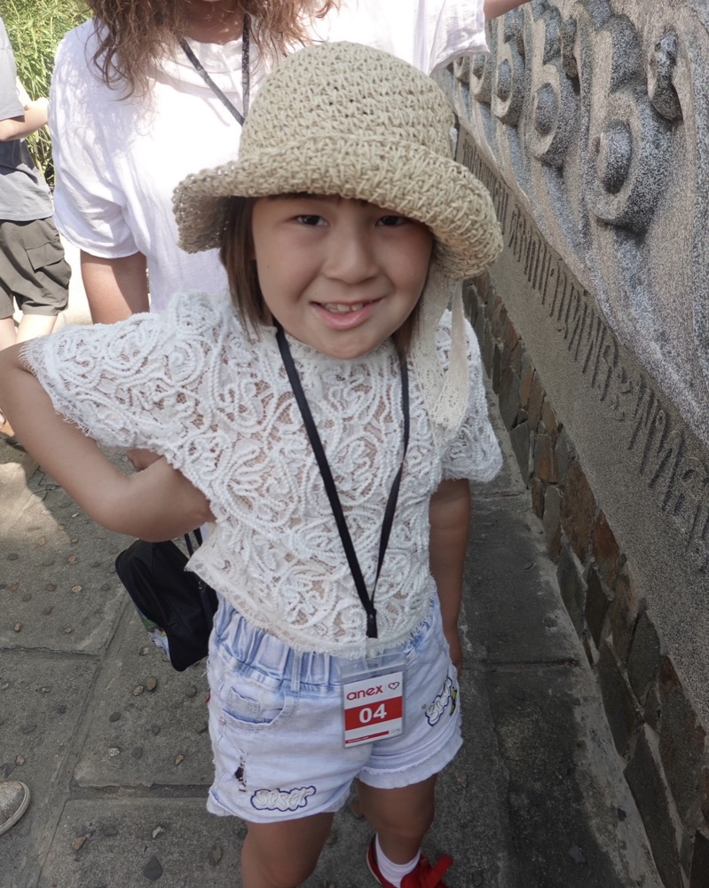

It started with Aruana.
A few years ago, Ayana Bektassova was babysitting her younger cousin Aruana, who has developmental delays. One thing stayed with her: almost no one invited kids like Aruana to draw, to play, or to make something of their own.
They were treated — but rarely included.
So she started iZhureq with classmates at NIS IB Astana. The name comes from Kazakh: zhürek means heart — together, a brave heart. Today it is a student-led organization with five departments and a team of volunteers who show up for children every month.
Ayana Bektassova Founder, iZhureq